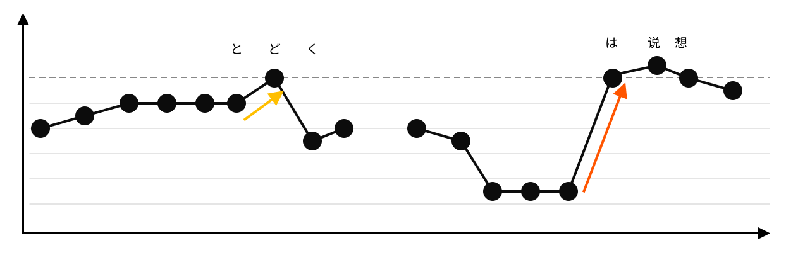
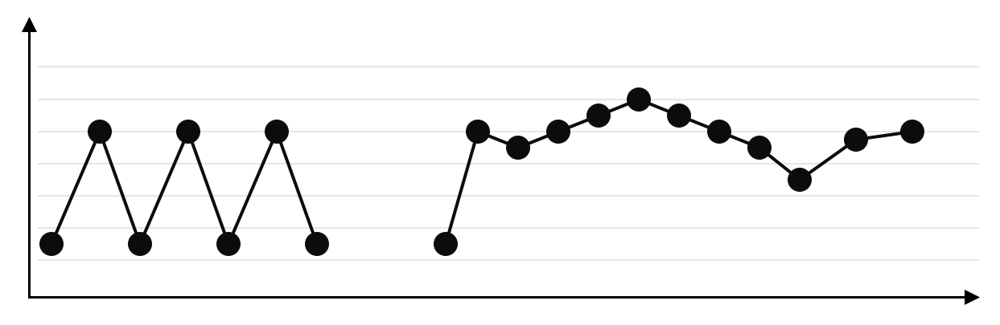
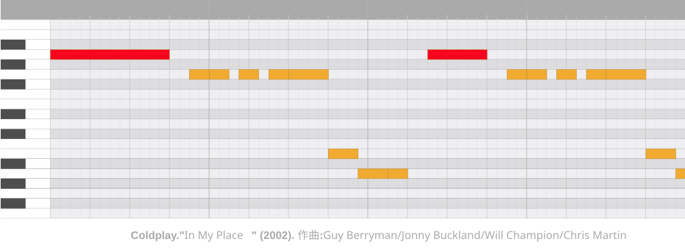
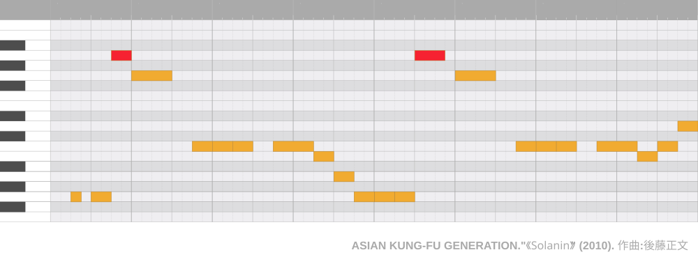
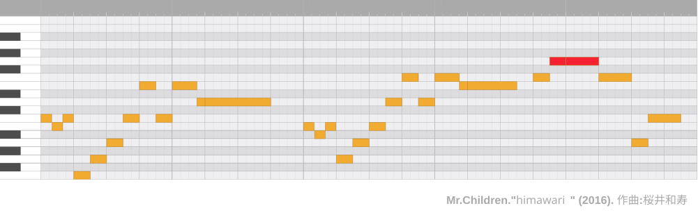

在上一讲中，我们从宏观视角探讨了乐句模块的组织与重复结构。本讲我们将镜头急剧拉近，切换至纯粹的微观视角，系统整理并语言化旋律从一个音走向另一个音时的具体运动模式。
 1. 旋律进行的类别
1. 旋律进行的类别
上行、下行与保留
当旋律连接到下一个音符时，其音高维度的变化客观上无外乎三种可能：上升、下降、或者保持不变。在音乐理论中，分别被规范命名为“上行（Ascending）、下行（Descending）、保留（Retention / 同音保持）”。

凭直觉我们也能清晰感受到：上行的旋律往往蕴含着力量感与昂扬情绪，而下行的旋律则流淌着沉静、安宁与抚慰。日本知名音乐理论家岛冈让先生曾将这一物理声学特性比拟为“重力”：
音符在“上行”时会积聚紧张感，在“下行”时则会消解并释放紧张感。这宛如我们在三维物理空间中向上攀登时对抗重力阻力、向下回落时顺应重力牵引一般。(中略) 上行象征着抗逆音响重力，而下行则象征着顺应音响重力。
—— 岛冈让、外崎干二《和声的原理与实习》，p.230 / p.250
在音乐理论中，“紧张（Tension）”一词极其高频地作为“平静稳定”的反义词出现。虽说“声音重力”是一种形象的文学比喻，但旋律线条本质上正是人类内心起伏或外界物象的隐喻投影，因此用这种直观的意象来打磨对旋律动势的体感认知，在实战创作中具有极高的价值。
级进与跳进
如果进一步细化其运动幅度，从一个音到下一个音的跨度，同样可以划分为：如“Do-Re-Mi-Fa-Mi-Re-Do”那般顺着相邻琴键平滑移动；还是像“Do-Mi-Sol”或“Do 直接跨越八度跳到上方 Do”那样发生大幅度的跨越。
- 移动到音阶相邻的音（二度音程）的平滑行进，称为级进（Stepwise / Conjunct Motion）[76]。
- 跨度大于二度（三度及以上）的高低跨越移动，称为跳进（Skipwise / Disjunct Motion / Leap）。
将方向（上行/下行/保留）与幅度（级进/跳进）相互交叉组合，旋律中前后两音的时间向度连接便被精准归纳为五大基本形态：

从听觉心理来看：级进带来的是平稳温和、从容连贯的气韵；而跳进则会激发起激烈、戏剧性、富有冲击力的波澜。而且音程跳跃的跨度越大，这种冲击力就越强。 三度、四度的微小跳进在听觉上尚属平易近人；而一旦跨越到五度及以上，其瞬间释放的冲击力就会急剧飙升，往往承担起乐段情绪推进中的核心点睛重音（Accent）。

如果将“跳进下行”与“跳进上行”做对比，跳进上行无疑更值得倾注全力关注。因为跳进下行是将“剧烈跳跃 × 情绪平复”相互中和对冲；而跳进上行则是将“剧烈跳跃 × 情绪高昂”强强联手，产生了极富爆发力的乘数戏剧张力。
2. “跳进上行”的实战运用
因此在进行扒谱分析或实战作曲时，密切留意“大幅度的跳进上行究竟被安排在什么节点登场？带来了怎样的心理冲击？”是极富实效的视角。我们通过经典案例来具体体会：
[Alexandros] – ワタリドリ（候鸟）
这首作品的大跳幅度堪称惊心动魄：从“一心に（全心全意）”到“羽ばたいて（展翅翱翔）”的瞬间，直接横跨了整整十度音程的超大跳进上行！有趣的是，若从绝对物理音高来看，“羽ばたいて”的最高音，实际上与前面“追いかけてとどくよう”的音高完全一致。然而，“羽ばたいて”因为是由超大跳进猛然拉上去的，所激荡出的史诗悲壮感与昂扬力量感却无可比拟。这就是时间艺术的迷人神采。


从时间维度的曲式编排来看，这个惊天大跳恰恰对应着收束（Liquidation）的交界点。前面“追いかけて”“届くよう”“一心に”其实是同一节奏动机的连续展开，而此处的大跳正是打破重复、为乐段画上终结句号的节点。 常规的收束句往往倾向于采用不起眼的平淡线条以示退场，而本曲却反其道而行之，以全段最炫目的超级大跳来实现震撼收束，设计极具匠心。 更不可忽视的是：这一极具纵深飞跃感的大跳，与“羽ばたいて（展翅翱翔）”这一歌词意境达成了百分之百的神级契合。在现代流行音乐中，旋律线条与歌词语意的共振是引爆听众情感的关键核心。
Ado – うっせぇわ（烦死了）
这是另一部堪称范本的力作。副歌开篇便是凌厉的连续 8 度（整整 1 个八度）大跳进。光是这一点就已经足够炸裂，而更绝妙的是其后半句突然翻转为波澜不惊的纯粹级进。前半段与后半段形成的剧烈形态对比，让整个旋律结构呈现出清晰利落的骨架感。


歌词的咬合同样天衣无缝：面对粗暴愤怒的“うっせぇわ（烦死了）”，编曲配以凶悍的大跳进；面对看似客套礼貌的“健康です（我很健康）”，则匹配以温顺平滑的级进。动静反差直击人心。
Maroon 5 – She Will Be Loved
这同样是一首依靠强弱对比致胜的名曲。副歌开唱后很长一段时间内，主唱亚当的旋律只是在窄幅音区内如微风拂柳般徘徊荡漾，几乎没有发生任何剧烈起伏。然而到了后半句“And she will…”处，旋律突然释放出一记 5 度音程跳进。 客观来说 5 度算不上极其罕见的大跳，但正因为前文积压了长时间的静止不前，强烈的相对落差瞬间将这记 5 度跳跃的心理冲击力放大了数倍。 如果前半段就写得花里胡哨、上蹿下跳，这个 5 度跳跃势必沦为平庸背景。全曲通盘的节奏配比感知，在此时起到了定海神针的作用。
3. 音域与峰值（Peak）布局
在音乐中，一个乐段乃至整首歌曲从最低音到最高音之间的跨度距离，被称为音域（Range）。 不仅是大跳进，一段乐段乃至全曲最极致的情感巅峰——最高音（Peak / 峰值）究竟安插在什么位置，是主宰整部作品艺术气质与呼吸节奏的核心战略抉择。
将峰值安排在段落开头的曲目
毫不吝啬地在副歌一开嗓就直接抛出全段最高音，能够瞬间营造出先发制人、扑面而来的炽热高潮感。这种布局与明快、热烈或能量澎湃的爽朗风格堪称天作之合。


Coldplay 的《In My Place》副歌开篇那声呼喊“Yeah”，本身就正是副歌的最高音。开篇直接登顶，随后如瀑布般顺势从容回落，这种大开大合的极简轮廓极具穿透力，是抓耳动听的至简大美范式。


ASIAN KUNG-FU GENERATION 的经典名作《索拉宁》（ソラニン）同样如此，在副歌起音“たとえば”处直接拉满到最高峰。 有人或许会问：既然一开场就把底牌打光了，后面的段落该如何维系平衡呢？——正如上述两首作品所示，常见的应对策略是：先登顶，随后行云流水地下行展开；当一个小分句告一段落后，再次通过大跳进闪电登顶，重新引爆高潮。通过周而复始的冲浪循环来保持势能。 值得注意的是，这两首歌都采用了高音峰值与下方平稳音区两极分化的布局：中间的次高音区被特意留出空挡，形成了“绝对巅峰 vs 衬托基底”的鲜明对立，极大增强了抑扬张弛的层次感。
将峰值保留在段落末尾的曲目
与此相反，在宏大深沉的慢板抒情曲（Ballad）中，往往在段落开端特意在上方留出充分的余白空间，步步为营地将终极峰值留到最末尾引爆。


Mr.Children 的《himawari》（向日葵）是宏大叙事抒情曲的标杆。副歌前半段虽然也保持着充沛的饱满度，但第一个乐句的顶峰仅仅摸到了“Mi”，第二个乐句摸到了“Fa”，始终在天花板上预留着一丝空间；直到全段最末尾的“そんな君に”处，最震撼的最高音才如火山喷发般决绝降临！这是一套层层递进、环环相扣的教科书级音域配比蓝图。 在实战创作中，如果在 A 段和 B 段主歌就已经毫无节制地把音域冲得过高，到了副歌便极易陷入“上方已经没有空间可以再冲”的窘境。从心目中的最高峰值倒推全局，在其他段落自律地“为天花板留出富余”，是衡量专业作曲家大局观的核心试金石。
器乐纯音乐的考量
在没有歌词人声的纯器乐作品中，由于不同乐器的音区特性与音色表现力各不相同，逻辑会更加多维。例如在交响乐团中，钟琴（Glockenspiel）虽然音区极“高”，但音色纤细，不具备压迫感极强的声学实体感；而小号（Trumpet）虽然物理音区相对较低，其破空而出的穿透力却远比钟琴更适合承载情绪总爆发。不过，当落实到具体的单件乐器演奏线条时，上述运动规律依然是普遍生效的。
总结
- 旋律的横向连接可以严谨分类为五种基本形态：保留（同音进行）、级进上行、跳进上行、级进下行、跳进下行。
- 级进与跳进的科学配比与动态反差，是塑造抓耳、动人旋律的命门所在。
- 旋律整体音域的规划运筹同样至关重要，最高音（峰值）究竟安排在段首还是段尾，将直接主导整部作品的情绪弧线与艺术人格。